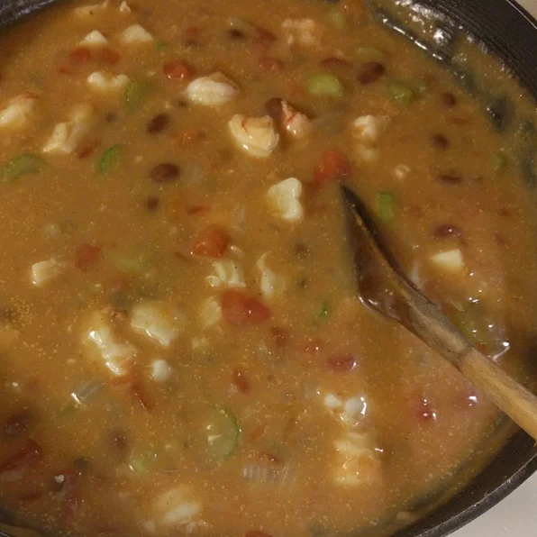

Spicy Shrimp and Kidney Beans

Description
Shrimp, red beans (or kidney), tomatoes with chiles, and cream of mushroom
soup make this soup an easy-to-make crowd pleaser that looks and tastes
like soup from a fine restaurant. Serve with Garlic Toast
to make it a complete meal.
Ingredients
- 3/4 cup water
- 2 tablespoons olive oil
- 3 cloves garlic, chopped
- 1 medium celery rib, chopped
- 2 green onions, chopped
- 1 (15 oz) can of red kidney beans, drained
- 1 (10 oz) can tomatoes with green chillies
- 1 (10 oz) can condensed cream of mushroom soup
- 1 sprig fresh dill
- 12 ounces medium shrimp - peeled and deveined
Instructions
- Warm oil in large saucepan
- Stir in garlic, celery and green onions. Cook until tender, about 3 minutes
- Stir in beans, tomatoes, cream of mushroom soup, and water. Bring to boil.
- Stir in dill, reduce heat to medium, and simmer 10 minutes.
- Stir in shrimp, and simmer until shrimp are pink, about 5 minutes.
Original recipy by Kim Berley @allrecipes